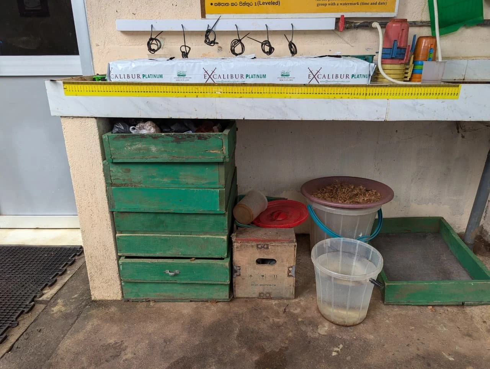
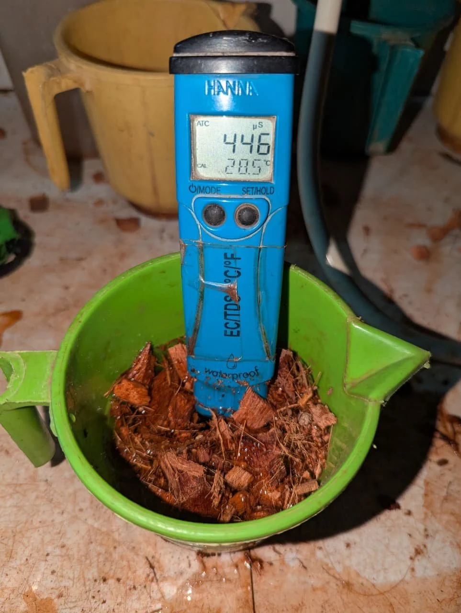
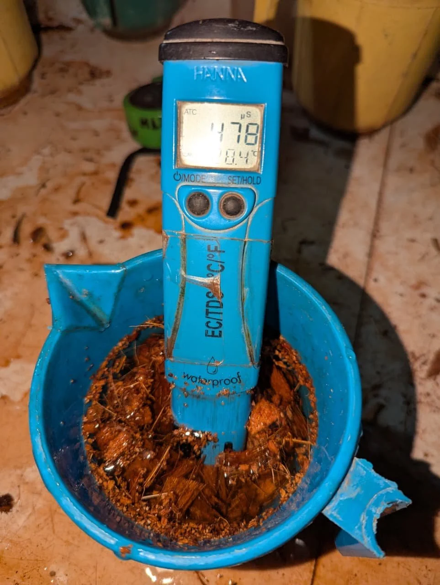
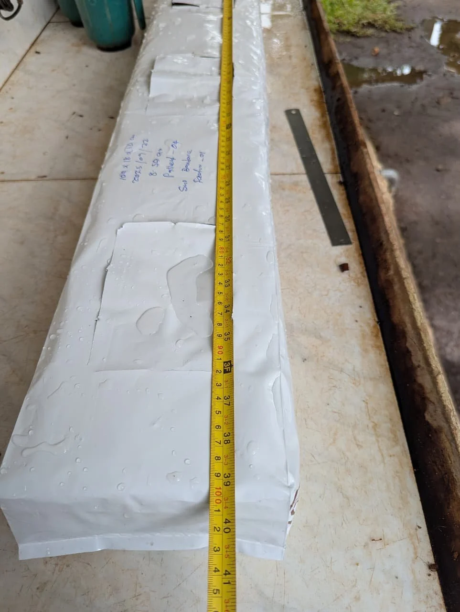
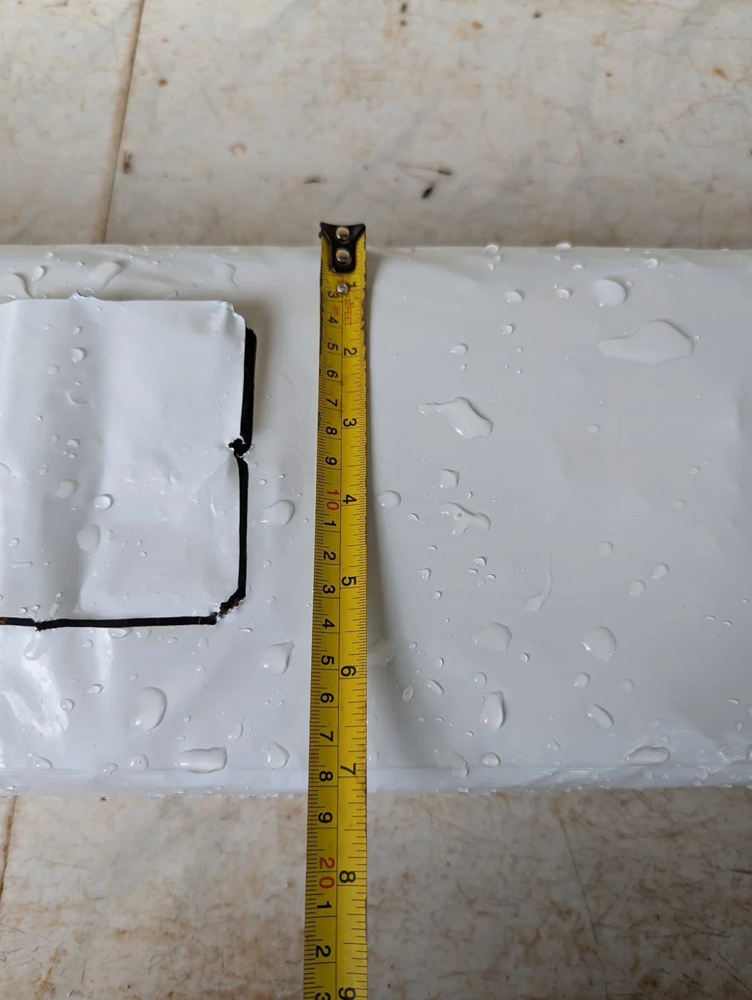
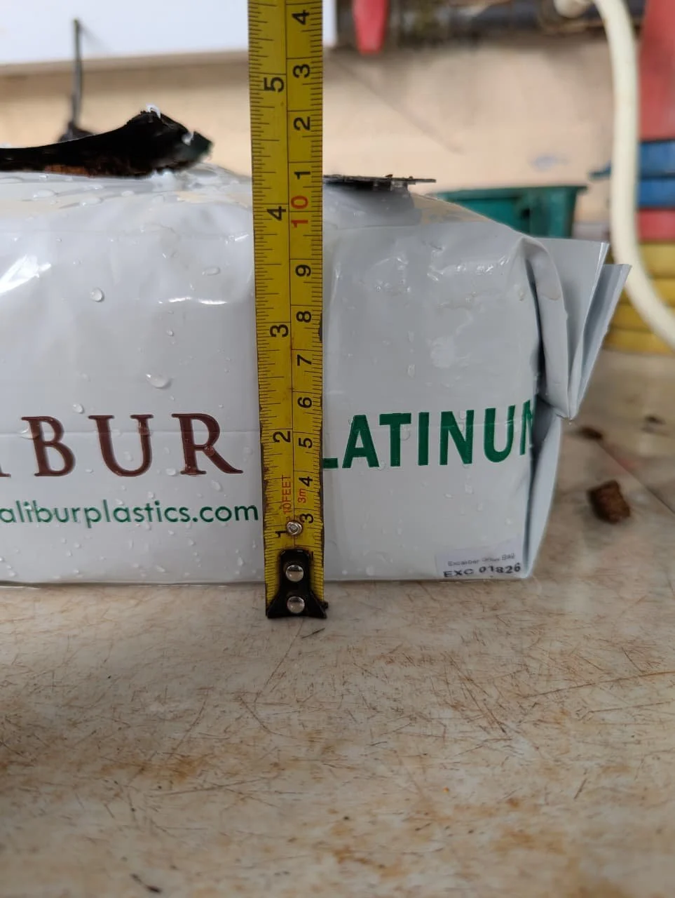
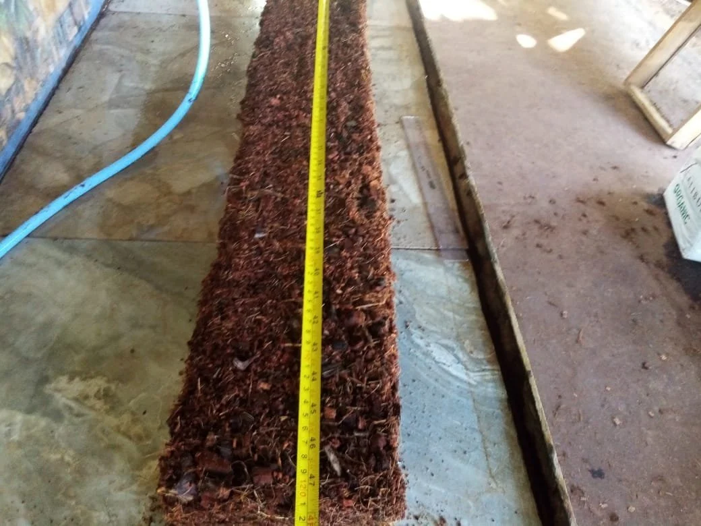
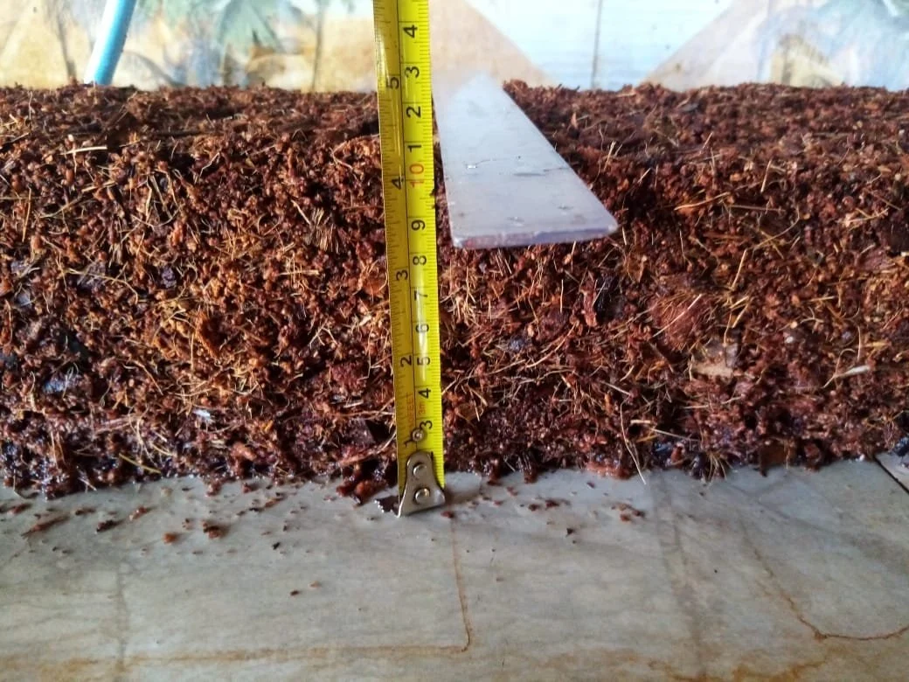
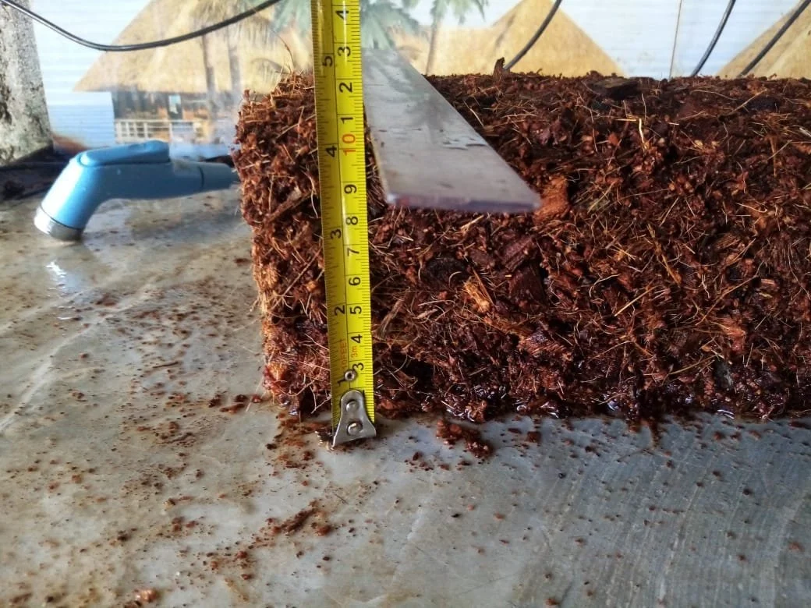
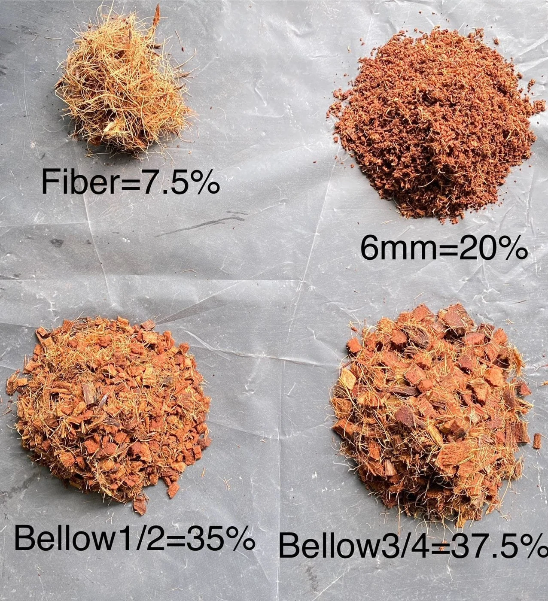

Raw material inspection
| Parameter | Standard | Sample results | Average | Grade |
|---|---|---|---|---|
| EC | < 500 µS/cm | 446 / 478 | 462 µS/cm | A |
| Appearance | Good / Acceptable / Bad | Good | — | A |
Product P01 · Coco peat grow bag · 100 × 18 × 12 cm
All nine recorded checks received Grade A. Section grades were left blank in the report.
| Parameter | Standard | Sample results | Average | Grade |
|---|---|---|---|---|
| EC | < 500 µS/cm | 446 / 478 | 462 µS/cm | A |
| Appearance | Good / Acceptable / Bad | Good | — | A |
| Parameter | Standard | Sample results | Average | Grade |
|---|---|---|---|---|
| Appearance | Good / Acceptable / Bad | Good | — | A |
| Weight | 2.200 kg | 2.200 / 2.250 kg | 2.225 kg | A |
| Drip hole | Good / Acceptable / Bad | Good / Good | — | A |
| Expansion | 100 × 18 × 12 cm | 100 × 18 × 13 / 100 × 18 × 12 cm | 100 × 18 × 12.5 cm | A |
| Foreign material | Absent / Present (acceptable or unacceptable) | Absent | — | A |
| Parameter | Standard | Sample results | Average | Grade |
|---|---|---|---|---|
| Print and logo | Good / Acceptable / Bad | Good | — | A |
| Pieces per pallet | 550 pieces per pallet | 550 | 550 | A |










No notes or conclusion recorded.
Excellent quality and consistent production. Highly recommended.
Minor issues with acceptable quality. Conditional approval.
Major quality problems detected. Not recommended.